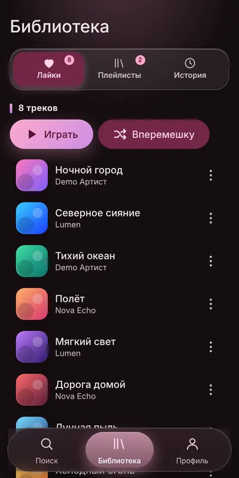
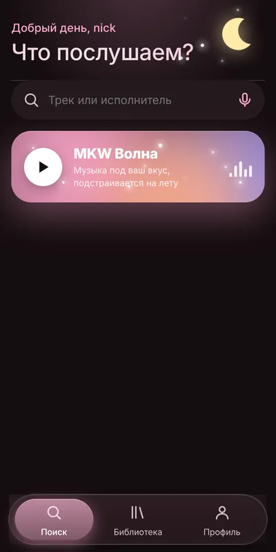
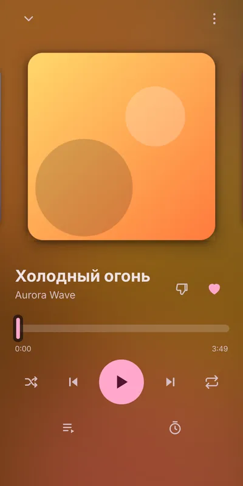
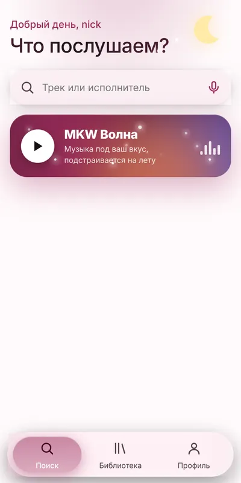
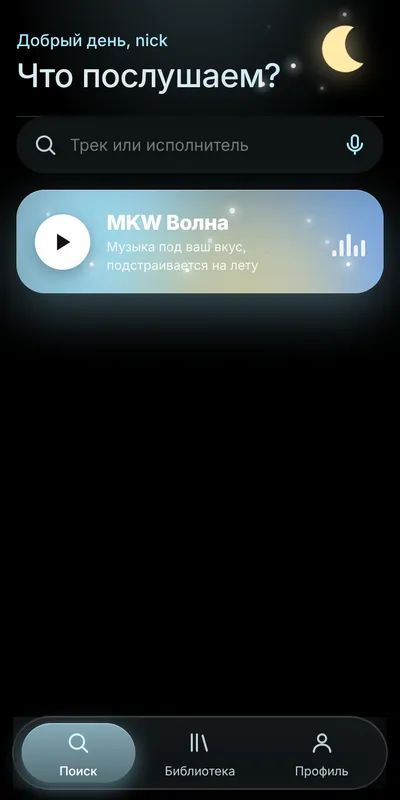
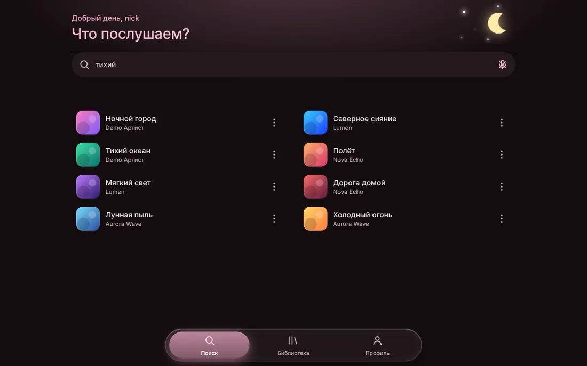

Музыка, которая слышит вас и понимает жесты
MKW Music — бесплатный музыкальный плеер для телефона и компьютера. Бесконечная MKW Волна подбирает треки под ваш вкус, а переключать музыку можно жестом руки, не касаясь экрана.



Что такое MKW Music
MKW Music — бесплатный музыкальный плеер для телефона и компьютера. Создатель — MiloKwel: он делает все обновления и разработку, чтобы всё работало.
MKW Волна
Бесконечный поток музыки под ваш вкус. Учится на лайках, истории, пропусках и дослушиваниях.
Управление жестами
Следующий и предыдущий трек, лайк, дизлайк, пауза, громкость: жестом перед камерой.
Поиск везде
iTunes, YouTube, Audius и поиск по ссылке. Источник выбирается в Профиле.
Темы и цвет
Авто, светлая, тёмная и полностью чёрная тема. Акцент: любой цвет на выбор.
Библиотека
Лайки, плейлисты и история прослушивания. Всё хранится в вашем аккаунте.
Поделиться треком
Ссылка на песню: друг открывает её и сразу слушает.
Узнать песню
Поднесите телефон к музыке или загрузите запись, и MKW найдёт название.
Без почты
Регистрация по нику и паролю. Больше ничего не нужно.
Музыка не заканчивается
Нажмите одну кнопку, и звучание подстраивается под вас прямо во время прослушивания. Это не случайный плейлист.
- Учитывает вкус: лайки, недавние прослушивания и любимые жанры.
- Реагирует на вас: пропустили трек — исполнитель теряет вес, дослушали — получает.
- Открывает новое: добавляет исполнителей из любимых жанров, которых вы ещё не слушали.
- Не повторяется: не ставит одного артиста подряд и не возвращает недавнее.
- Дизлайк: есть у любого трека, такой трек и похожие встречаются реже.
Управляйте рукой, а не пальцем
Руки заняты или грязные? Покажите жест камере. Девять действий, включается в Профиле с вашего согласия и по умолчанию выключено.
Картинка с камеры обрабатывается прямо на вашем устройстве, никуда не передаётся и не сохраняется. Функция в бета-версии: нужна включённая камера и открытая вкладка.
Всё приложение за минуту
Листайте. Скриншоты сняты в самом приложении на демо-данных.
Material You и жидкое стекло
Нижнее меню стеклянное: подсветка идёт за пальцем. Тёмная и полностью чёрная темы экономят заряд на OLED-экранах.

Светлая
Тёмная

Чёрная и свой цвет
Так же удобно на большом экране
Адаптивная вёрстка, а приложение можно установить из браузера как обычную программу.

Три шага
Откройте сайт
Перейдите на mkwmusic.ru в Chrome, Edge или Safari.
Зарегистрируйтесь
Придумайте ник и пароль, почта не нужна. Запишите пароль в менеджер паролей.
Установите
Нажмите «Установить приложение». На iPhone: «Поделиться», затем «На экран Домой».
Вопросы и ответы
Что такое MKW Music?
Бесплатный музыкальный плеер, который работает в браузере и ставится на телефон или компьютер как приложение. Главное в нём: бесконечная MKW Волна, управление жестами, поиск по нескольким источникам и красивое оформление.
Кто создатель MKW Music?
Создатель — MiloKwel. Он делает все обновления и разработку, чтобы всё работало.
Что такое MKW Волна?
Бесконечный поток музыки, который подстраивается под ваш вкус: учитывает лайки и историю, реагирует на пропуски и дослушивания, открывает новых исполнителей из любимых жанров.
Как работают жесты и безопасно ли это?
Включаются в Профиле после вашего согласия. Камера работает на вашем устройстве, изображение никуда не передаётся и не сохраняется. Девять жестов: два пальца — следующий, рок-жест — предыдущий, большой палец вверх — лайк, средний палец — снять лайк, большой палец вниз — дизлайк, ладонь — пауза, палец вверх — продолжить, кулак — тише, три пальца — громче.
Нужна ли почта?
Нет, достаточно ника и пароля.
Откуда берётся музыка?
Поиск идёт через iTunes (30-секундные фрагменты), YouTube (официальный встроенный плеер) и Audius. MKW Music не хранит музыку у себя.
Это бесплатно?
Да, пользоваться MKW Music можно бесплатно.
Включите свою волну
Откройте MKW Music, лайкните пару треков и нажмите на карточку волны.
Открыть MKW MusicСоздатель — MiloKwel
Все обновления и разработку делает MiloKwel, чтобы всё работало. Исходный код и новости: GitHub.